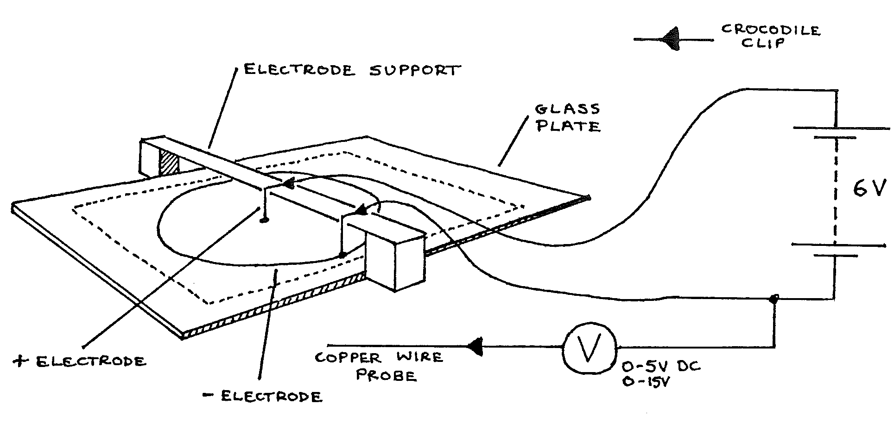
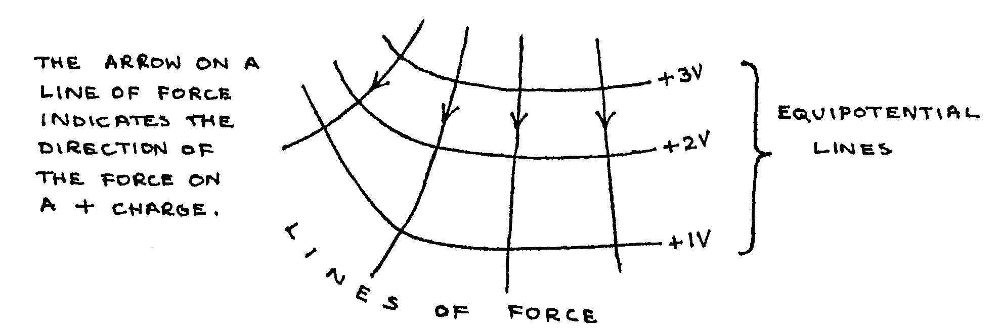

F1-1: Investigating Electric Fields¶
Apparatus¶
Glass plate with graph paper on the underside; probe; electrodes; electrode support; 100ml copper sulphate solution; syringe; spirit level; 4 connecting leads; voltmeter (0-5 & 0-15Vdc); 6V battery; 2 sheets graph paper.

Procedure¶
Pour enough copper sulphate solution onto the glass plate to form a thin layer. Level the glass carefully so that the pool is of uniform depth.
Arrange the apparatus as above, checking that the electrodes are clean (if necessary clean with sand paper).
On a sheet of graph paper, mark \(X\) and \(Y\) scales similar to the sheet under the glass plate. Draw a point and a circle to show the positions of the electrodes.
Holding the probe vertically, touch the tip onto the copper sulphate solution between the electrodes. Move the probe until a point is found where \(V =\) 1 V. Read the \(X\) and \(Y\) coordinates. Mark this point on your graph paper.
Find another point about 2cm from the first, where \(V =\) 1 V. Mark this point on the graph paper. Continue this process until either the line of points forms a closed loop or goes off the area of the solution.
Join the points with a smooth curve and label it +1V.
Repeat 4, 5, and 6 with \(V =\) 2V, 3V, and 4V.
Touch the probe onto each electrode in turn, read V, and mark these values on the graph paper beside the electrodes.
Change the electrodes to these shown below:
Draw two parallel lines on a new sheet of graph paper to show these electrodes. Now repeat steps 4 to 8, but place the probe tip onto positions in the whole area of the copper sulphate solution.
Use the syringe to replace the copper sulphate solution into its container. Wash the glass plate (top surface only!) then rinse the electrodes and the probe in clean water.
Theory¶
The reading on the voltmeter was the value of electric potential, relative to the negative electrode. Thus, the curves that you plotted were equipotential lines, that is lines drawn linking points at the same electric potential.
If an electric charge moves between points at different electric potentials, it moves through a potential difference (p.d.), and work is done. If a charge moves perpendicular to an equipotential line, work is done at a maximum rate (per unit distance), and the charge is moving along a line of force.
A line of force is a line drawn to indicate the direction of the force on a unit positive charge placed at one of the points on the line. A charge free to move would move along the line of force, so that work is done at a maximum rate (per unit distance).
Example: (Note that the lines always cross perpendicularly)

Analysis¶
- Sketch on your graph papers the lines of force, which are perpendicular to the equipotential lines (use a different colour pen).
- Use the graph paper obtained in 1 to 8, to find the approximate potential difference between points \(A\)(9,15) and \(B\)(8,10).
- Calculate the work done if a charge of +2C moves from point \(A\) to point \(B\). Describe the energy change if the charge is acted on by no forces other than that exerted by the electric field.
- How much work is done if the +2C charge moves along an equipotential line?
- Look at the pattern of lines of force from steps 1 to 8. What formula is used to find the force on a charge in this field (in terms of the size of the charge, the charge on the central electrode, and the distance from the central electrons)?
- Look at the lines of force from step 9. What formula can be used to find the force on a charge between the electrodes (in terms of p.d. between the electrodes, distance between electrodes, and the charge)?
- Calculate the work done if a -4C charge moves between the electrodes (from the + to the - electrode), in both of the fields studied.